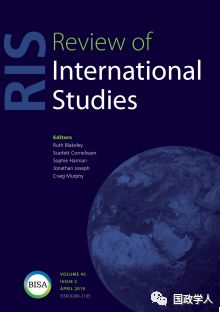
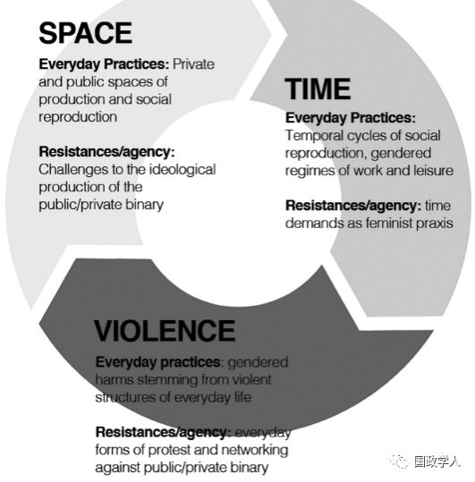

收录于合集

内容简介
【 作者 】Shirin M. Rai：华威大学政治与国际研究系的教授。主要研究领域为女性主义国际政治经济学、性别与政治制度。她写了大量关于性别、治理和发展的文章并多次发表在《社会政治》等期刊上。她还参与编辑了《牛津大学出版社政治与表现手册》，同时也是《社会政治:性别、国家和社会的国际研究》的联合编辑。
Juanita Elias：女性主义政治经济学家，研究方向为东南亚移民的性别。
【 编译 】 金 琳
【 来源 】
Shirin M. Rai and Juanita Elias,Feminist everyday politicaleconomySpace, time, and violence, Review of International Studies(2019), Vol.45, No.2, pp. 201–220
【 期刊 】Review of International Studies是由剑桥大学出版社代表英国国际关系学会出版的国际关系学术期刊。根据期刊引用报告，该期刊的2017年影响力因子为2.067，在“国际关系”类别的85种期刊中排名第20位。
【 审校 】杨艺华 陈舜波

内容提要
由于长期以来女性主义的研究都是基于日常的性别体验，因而很多人会问:为什么我们需要一个明确的日常化的女性主义理论?本文作者通过两个质疑来对“日常（Everyday）”的概念进行探讨：一是质疑人们对“日常”的普遍理解；二是质疑“日常”这一理论的理解是否能够帮助人们进一步分析女权主义这一基本概念。由此作者认为可以借助将社会再生产的理论建构推向新方向的方式来发展日常生活中女性主义政治经济，而实现这一目标主要依靠空间、时间和暴力（STV）的理论分析框架。作者认为利用STV分析框架有助于打破市场和社会再生产的人为界线，以便更好地研究资本主义或经济全球化的运作过程。
本文主要分为三个部分。在第一部分中，作者结合IPE、IR、Feminist theory等理论概述了社会再生产（Social reproduction）和日常（Everyday）等概念。在第二部分中，作者为了力求更好地理解社会再生产的积极性和消极性，详细地讨论了STV分析框架中的三元素即社会再生产的空间、社会再生产的时间性和支撑日常生活的性别结构暴力。在最后一部分中，作者讨论了如何使用性别代理人（Gendered agency）来反抗对女性的压迫和暴力。
Shirin M. Rai and Juanita Elias,
文章导读
第一部分 日常社会再生产 ****
首先，作者承认 “社会再生产”和“日常”这两个概念的重要意义。
其次，通过对于以往关于社会再生产概念讨论的反思，作者将“社会再生产”定义为在生产生活中涉及到的所有活动，社会再生产还包括在家中的商品服务的无偿生产以及用以稳定(有时也带来挑战)占主导地位的社会关系文化和意识形态的再生产。由于“日常”概念的模糊性，作者认为社会再生产是理解日常生活的核心，而只有将社会再生产置于空间、时间和暴力的分析框架中才能对国际政治经济学中“日常”的概念有更加深入的理解。
最后，作者认为既存的政治、经济和社会结构造成了明显的性别不平等，并且指出市场生产与社会再生产的紧密联结关系，反对公私领域的二元划分。
第二部分 空间、时间或暴力： 一种分析框架
STV框架的提出是基于社会再生产和日常生活的讨论的基础之上，作者认为社会再生产就像市场生产一样被置于社会空间中，社会空间的边界是流动的和相互联系的并处于时间和节奏的连续统一体中，这就吸引了结构性暴力和个人暴力，反过来又通过代理人的动员激起了对此类暴力的抵制。而日常生活是在包含和排除、连接和边缘化的关系空间中进行的，它根植于具体的日常的人类实践的社会关系之中，它既是一种具体的抽象概念，又是一种社会产物。

1、 空间 ****
作者认为，空间不仅是一种物理位置，而是由发生在其内部的具有性别色彩的社会实践所组成的。以家庭空间为例，家庭是生产和社会再生产的融合场所，但是无论是在政治层面、法律层面还是道德层面都存在着模糊的公私分界线。此外，在全球经济结构调整的条件下，家庭作为一个经济单位的概念已得到重构，甚至受到挑战。与此同时，作者认为尽管全球生产将家庭空间延伸并跨越国界，但家庭作为社会再生产劳动力的主力军仍然保持有利地位。
2 、时间 ****
社会再生产需要时间，这里的时间是指工作时间。通过采用时间使用调查 (TUS)的方法，作者研究了关于社会再生产在妇女日常生活占据中心地位的重要数据，进而发现时间是从事有偿工作的女性可以购买的一种资源。作为一种商品，它可以减少一些妇女的日常劳动负担，同时增加了另一些妇女的劳动负担。作者认为应该从战略的角度将时间视为日常生活中的商品，然后可以看到社会再生产的消耗是如何构建在个人、家庭和社区的日常经济中的，以及性别规范是如何在不同类型工作中存在差异的。
3 、暴力 ****
作者第三个关注点是性别暴力是如何支撑日常生活的。
首先，作者将暴力看作是法律等政策制度。暴力保障公共和私人财产、规则制定以及隔离主义等意识形态的边界，其中种族、族裔和性的边界是由暴力行为创造和捍卫的。
其次，作者从结构和经验两方面研究暴力及其产生的危害，以对于直接暴力的批判为基础，作者展示人们对日常暴力的理解是如何嵌入到更广泛的经济和社会权力结构中。
最后，作者发现日常生活中的暴力行为，表现为一种在社会再生产以及资本主义下劳动力可随意抛弃的性别逻辑。如果把日常经验放在更广泛的性别经济的社会再生产中，就会发现日常生活中存在着多层次的暴力行为。
第三部分 日常生活的塑造： **** 代理 ****
作者试图在 STV分析框架中加入对代理人的讨论，详细的说明代理人在分析框架中可以做（不可以做）的工作。作者认为一些女性主义学者在分析“代理人”问题上并没有将个人放在社会面貌（social landscape）中，但是作为殖民主义的腹地、资本主义生产的领域和社会再生产的空间，社会面貌实际上已经成为分析个体代理的组成部分。
总 结 ****
作者通过将 “日常（everyday）”概念的讨论置于社会再生产的理论框架中对国际政治经济学中有关“日常（everyday）”本质的辩论进行女权主义干预。作者把社会再生产看作是日常的，从而把生产和再生产联系在一起，进而说明了控制和压迫的机制是如何通过再生产的空间、时间和暴力的社会制度把这两者联系起来，以及说明了如何通过在不同规模和范围内行使权力来维持和挑战这些机制。作者通过STV框架将社会再生产视为日常生活，提出了一种不破坏妇女日常生活经验的可能性，并且坚持认为日常生活中存在性别政治，因为社会再生产是日常生活。
** 扫描下方小程序码查看原文p df**
本文由国政学人微信公众平台编译首发
更多阅读
【地区秩序】阿米塔夫·阿查亚：权力转移还是范式变化？中国崛起与亚洲新兴安全秩序 | 国政学人
国政学人 （ID：guozhengxueren)
为方便学人及时阅读高质量文章
别忘把国政学人设置 星标 哦~